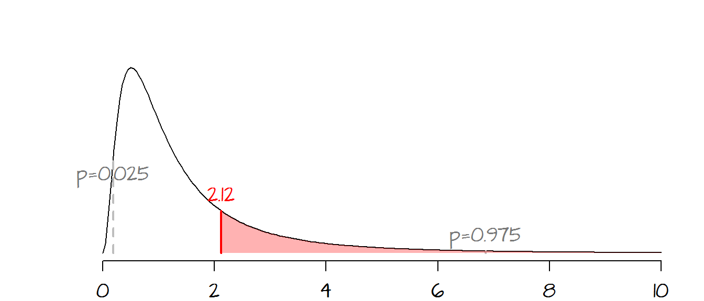
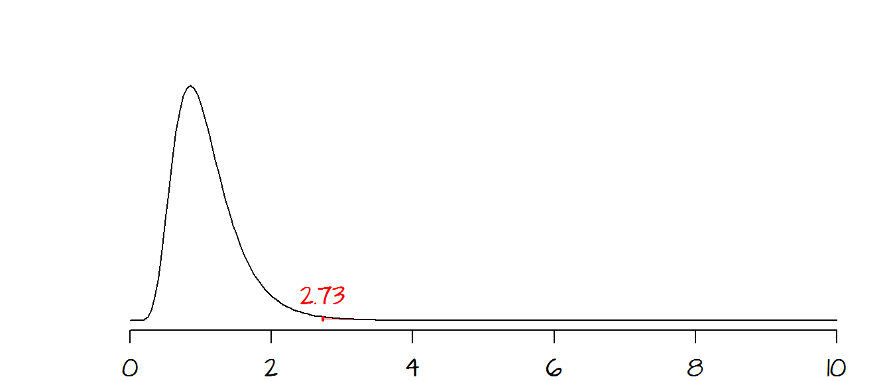

Comparing variances: Fisher’s F-test
Last modified on 2016-05-21
The test of variances requires that the two sampled population be normally distributed and that the samples are randomly selected from their respective populations.
1 Introduction
The method is simple; it consists of taking the ratio between the larger population variance, \(\sigma_1^2\), and the smaller population variance, \(\sigma_2^2\), then looking up the ratio on an \(F\)-distribution curve. The null hypothesis states that the ratio equal 1, \[ H_o: \frac{\sigma_1^2}{\sigma_2^2} = 1 \] and the alternate hypothesis states that the ratio differs from 1 (i.e. the variances differ), \[ H_a: \frac{\sigma_1^2}{\sigma_2^2} \neq 1 \] or is greater than 1 (i.e. \(\sigma_1^2\) is significantly bigger than \(\sigma_2^2\)), \[ H_a: \frac{\sigma_1^2}{\sigma_2^2} \gt 1 \]
Since the larger variance is assigned to the numerator by convention, we do not have a situation where the ratio is less than 1.
Since we are working with samples, we work with the sample variances \(s_1^2\) and \(s_2^2\) and compute the test statistic \(F\) as follows: \[ F = \frac{s_1^2}{s_2^2} \]
The shape of the \(\pmb F\)-distribution curve is defined by both sample’s \(df\)’s, i.e. \((n_1-1)\) and \((n_2-1)\). Like the \(\chi^2\) distribution, the \(F\) distribution tends to be skewed to the right, especially for large \(df\)’s.
2 Example 1
In one of the examples in the \(z\) and \(t\) test section, we seek to compare the concentration of sulfates between a background sites and a contaminated well (data taken from Millard et al., p. 418). Did the two samples have equal variances? The table of concentrations is reproduced here.
| Contaminated | Background |
|---|---|
| 600 | 560 |
| 590 | 550 |
| 570 | 570 |
| 570 | 550 |
| 565 | 570 |
| 580 | 590 |
| 550 | |
| 580 |
2.1 Solution to example 1
The variances for both samples are \(s_{Ref}^2 = 712.5\) and \(s_{Cont}^2 = 336.7\). Since \(s_{Ref}^2 > s_{Cont}^2\), the value \(s_{Ref}^2\) will be in the numerator giving us the following test statistic:
\[ F = \frac{s_{Ref}^2}{s_{Cont}^2} = \frac{712.5}{336.7} = 2.12 \]
Next, we must determine where the \(F\) statistic lies along the \(F\)-distribution curve. This requires that we compute the two \(df\)’s from the samples to define the shape of the \(F\) distribution: \[ df_{Ref} = 8 - 1 = 7 \] \[ df_{Cont} = 6 - 1 =5 \]
Now that we have the shape of the \(F\)-distribution defined, we can look up the probability of getting an \(F\) statistic as extreme as ours (an F-distribution table can be used, or the value can be computed exactly using the function pf(), e.g. pf(2.12, 7, 5,lower.tail=FALSE) where the values 7 and 5 are the \(degrees\; of\; freedom\) for the reference sample and contaminated site sample respectively).

The \(F\) values associated with a probability of 0.025 and 0.975 (associated with rejection regions for a two-tailed \(\alpha\) of 0.05) are displayed on the curve in grey dashed vertical lines.
The probability of getting an \(F\) as large as ours is about 0.21 (or 21%). Since \(H_a\) represents both sides of the distribution, we double the probability to give us the chance of getting a test statistic as great or as small as ours, so for a two-tailed test, \(P=0.42\). With such a high \(P\)-value, we cannot reject the null and therefore can state that for all intents and purposes, the variances between both populations are the same (i.e. the observed variability between both \(s\) can be explain by chance alone).
The following figure shows the observed \(P\) values in both tails.

This can be easily executed in R as a two-tailed test as shown in the following code block:
Ref <- c(560, 530, 570, 490, 510, 550, 550, 530)
Cont <- c(600, 590, 590, 630, 610, 630)
var.test(Ref, Cont, alternative="two.sided")
F test to compare two variances
data: Ref and Cont
F = 2.1163, num df = 7, denom df = 5, p-value = 0.4263
alternative hypothesis: true ratio of variances is not equal to 1
95 percent confidence interval:
0.3088156 11.1853404
sample estimates:
ratio of variances
2.116337 Note that the var.test() computes the \(F\) ratio using the first variable name in the list as the numerator. For example, had we reversed the order of variables (i.e. var.test(Cont, Ref, alternative="two-sided")), the returned \(F\) value would be the inverse of the original \(F\) value, or \(1/2.12 = 0.47\). The \(P\) value would have stayed the same however.
3 Example 2
An investor is concerned that stock 1 is a riskier investment than stock 2 because its variation in daily prices is greater. The following table is provided with summary statistics for a sample of 25 daily price changes.
| Stock 1 | Stock 2 | |
|---|---|---|
| Sample size | 25 | 25 |
| Standard deviation | .76 | .46 |
Is stock 1’s variability significantly greater than that of stock 2, or is the observed difference due to chance?
[This example is adapted from McCLave et al. page 461]
3.1 Solution to example 2
We are asked to test the hypothesis, \(H_o\), that the two stock have equal variances and that any observed difference is due to chance (i.e. \(\sigma_1^2 = \sigma_2^2\)). The alternate hypothesis, \(H_a\), states that stock 1 has greater variability than stock 2 (i.e. \(\sigma_1^2 > \sigma_2^2\)).
Since we are given summary statistics of the samples and not the full dataset, we cannot use the var.test() function which requires the full dataset as input. Instead, we will compute the \(F\) ratio and observed probabilities separately.
The \(F\) ratio is: \[ F = \frac{(.76)^2}{(.46)^2} = 2.73 \]
The degrees of freedom are \((25 - 1) = 24\) for both samples.
The probability of getting a test statistic as extreme as ours can be computed using the pf() function:
pf( 2.73, 24, 24, lower.tail = FALSE)[1] 0.008502252Note that we are using the lower.tail = FALSE option since our alternate hypothesis is that \(\sigma_1^2 > \sigma_2^2\). This gives us a probability of \(0.008\), in other words, if the difference between stock 1 and stock 2 were explained by chance variability alone, there would be lest than a 1% chance of computing a \(F\) ratio as extreme as ours. We can safely reject \(H_o\) and state that the observed difference is real and that stock 1 has greater daily variability than stock 2.

4 References
Freedman D.A., Robert Pisani, Roger Purves. Statistics, 4th edition, 2007.
McClave J.T., Dietrich F.H., Statistics, 4th edition, 1988.
Session Info:
R version 3.3.0 (2016-05-03)
**Platform:** x86_64-w64-mingw32/x64 (64-bit)
attached base packages: stats, graphics, grDevices, utils, datasets, methods and base
other attached packages: boot(v.1.3-18), gplots(v.3.0.1), MASS(v.7.3-45) and tidyr(v.0.4.1)
loaded via a namespace (and not attached): Rcpp(v.0.12.5), Rttf2pt1(v.1.3.4), knitr(v.1.13.1), magrittr(v.1.5), xtable(v.1.8-2), R6(v.2.1.2), stringr(v.1.0.0), dplyr(v.0.4.3), caTools(v.1.17.1), tools(v.3.3.0), parallel(v.3.3.0), KernSmooth(v.2.23-15), miniUI(v.0.1.1), DBI(v.0.4-1), extrafontdb(v.1.0), gtools(v.3.5.0), htmltools(v.0.3.5), lazyeval(v.0.1.10), yaml(v.2.1.13), digest(v.0.6.9), assertthat(v.0.1), bookdown(v.0.0.71), shiny(v.0.13.2), formatR(v.1.4), bitops(v.1.0-6), evaluate(v.0.9), mime(v.0.4), rmarkdown(v.0.9.6.9), gdata(v.2.17.0), stringi(v.1.0-1), pander(v.0.6.0), extrafont(v.0.17) and httpuv(v.1.3.3)
 Manny Gimond
Manny Gimond